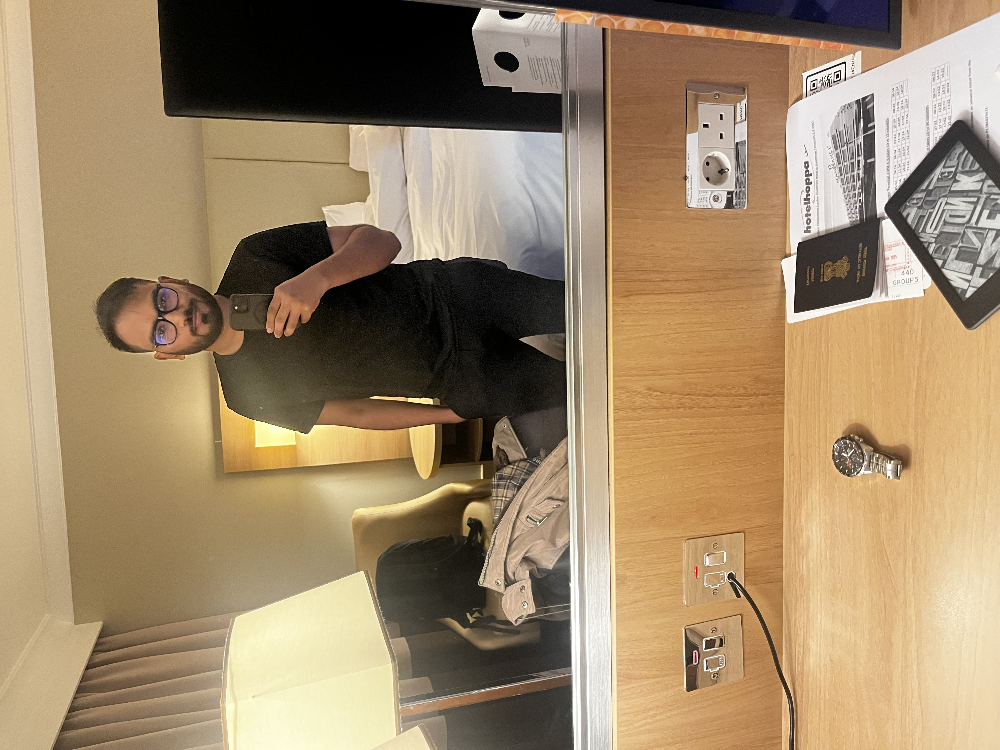

Hi, my name is
Salahuddin Khan.
Robotics and perception engineer focused on real-time SLAM, multi-view geometry, and sensor fusion for autonomous systems.
6+ yrs
Robotics & perception
SLAM & VIO
Production-scale systems
200K+
Vehicles (state estimation)
M.Eng.
Cornell University
01.About me
I am a robotics and perception engineer with 6+ years of experience developing real-time SLAM, multi-view geometry, and sensor fusion for robotics and autonomous vehicles.
I build scalable perception pipelines for 3D reconstruction, localization, and mapping using multi-camera and multimodal sensor stacks, combining classical geometric vision with modern machine learning for robust deployment in the real world.
Core strengths include Visual SLAM and VIO, probabilistic filtering, bundle adjustment, embedded C/C++ on ARM, and collaboration across firmware, ML, and backend teams.